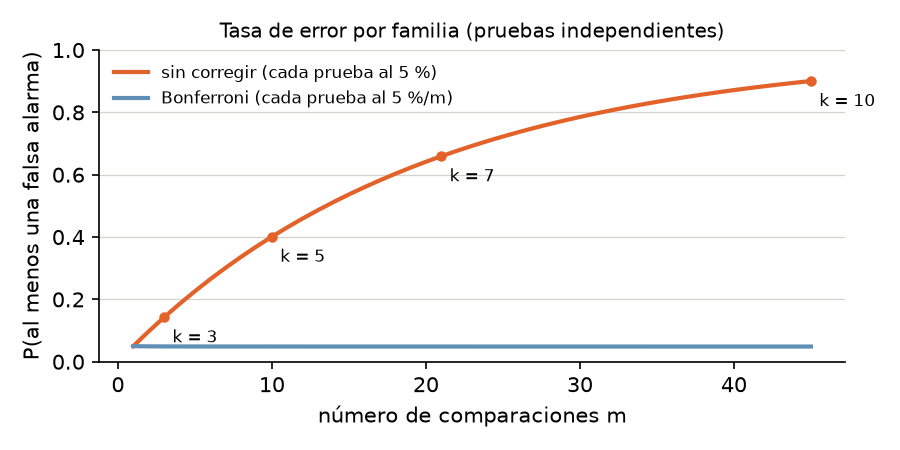
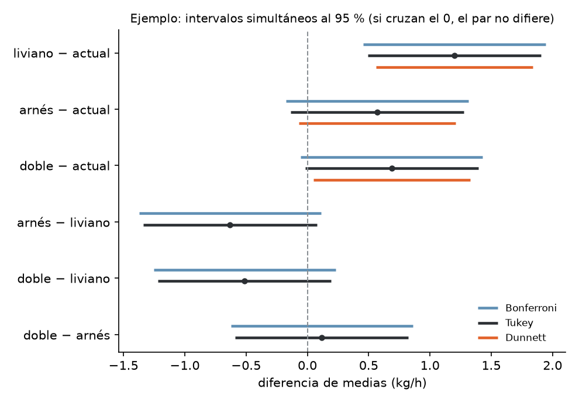
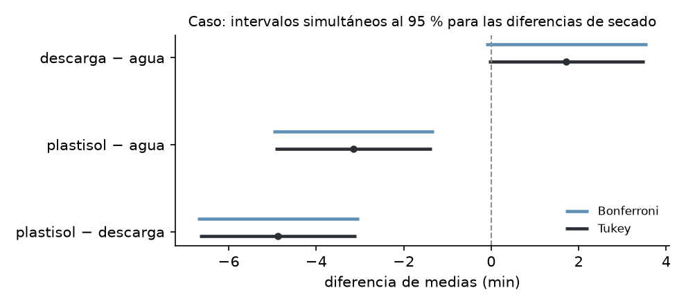

![Camilo Merino]()
Unidad 8 · Comparaciones múltiples
Qué vas a poder hacer. Después de un ANOVA que rechaza, decir qué pares de grupos difieren sin inflar el riesgo de falsas alarmas: calcular la tasa de error por familia, ajustar con Bonferroni, aplicar Tukey (HSD) a mano y con Python, comparar contra un control con Dunnett, reconocer cuándo usar Scheffé, y leer la tabla de Tukey y sus intervalos simultáneos para tomar una decisión.
Lo que necesitas antes. De la unidad 2, la prueba \(t\) y el intervalo para una diferencia de medias. De la unidad 7, la tabla ANOVA de un factor: sobre todo el \(CME\) y sus grados de libertad, que acá se reutilizan en cada comparación.
Tiempo. Unas 5 horas: 2 de lectura con el ejemplo y 3 de práctica.
1. El problema · muchas preguntas, un solo riesgo
El ANOVA de la unidad 7 dice si alguna media difiere. La pregunta práctica casi siempre es otra: cuáles. Con \(k\) grupos hay \(m = k(k-1)/2\) pares. Si cada par se prueba al 5 %, cada prueba tiene un 5 % de falsa alarma, pero la familia de pruebas tiene mucho más:
\[\text{tasa de error por familia} = P(\text{al menos una falsa alarma}) = 1 - (1-\alpha)^m \quad \text{(pruebas independientes)}\]

Las comparaciones de pares no son independientes (comparten grupos y el mismo \(CME\)), así que la cifra exacta es algo menor, pero la conclusión no cambia: sin corrección, buscar diferencias entre muchos grupos garantiza encontrar alguna. El ejercicio 8.9 lo mide con una simulación.
Hay dos maneras de pensar el error:
- Tasa por comparación: cada prueba al 5 %. Es lo que hace una prueba \(t\) suelta.
- Tasa por familia: la probabilidad de que alguna de las \(m\) conclusiones sea una falsa alarma quede en 5 %. Es lo que exige quien va a actuar sobre la lista completa de diferencias.
Todos los métodos de esta unidad controlan la tasa por familia. Difieren en qué familia cubren (todos los pares, solo contra un control, cualquier contraste) y por eso en cuánto se ensanchan los intervalos.
Lo común a todos. Comparan medias con el error estándar que sale del ANOVA:
\[ee(\bar y_i - \bar y_j) = \sqrt{CME\left(\frac{1}{n_i} + \frac{1}{n_j}\right)} \qquad \text{con } N - k \text{ gl}\]
Usar el \(CME\) (que junta la información de todos los grupos) en vez de la varianza de solo los dos grupos comparados da más grados de libertad y más precisión. Por eso los supuestos del ANOVA (normalidad de residuos, varianzas iguales, independencia) siguen valiendo acá.
2. Bonferroni · repartir el 5 %
La idea más simple: si se hacen \(m\) pruebas y se quiere que la familia tenga a lo más \(\alpha\), cada prueba se hace al nivel \(\alpha/m\). Funciona por la desigualdad de Boole: la probabilidad de que ocurra alguno de \(m\) eventos es a lo más la suma de sus probabilidades, \(m \cdot \alpha/m = \alpha\).
En la práctica hay tres formas equivalentes de aplicarlo:
| Forma | Cómo |
|---|---|
| Valor crítico | rechazar si \(|t_{ij}| > t_{1-\alpha/(2m),\,N-k}\) |
| Diferencia mínima | rechazar si \(|\bar y_i - \bar y_j| > t_{1-\alpha/(2m),\,N-k}\cdot ee\) |
| Valor p ajustado | \(p_{Bonf} = \min(1,\ m \cdot p)\) y comparar con \(\alpha\) |
Cuándo conviene. Cuando las comparaciones son pocas y elegidas antes de ver los datos (por ejemplo, tres preguntas concretas). Sirve para cualquier tipo de prueba, no solo medias. Su defecto: con muchas comparaciones es conservador (la familia queda bajo el 5 % y se pierden diferencias reales).
Holm, la versión escalonada. Ordena los \(m\) valores p de menor a mayor y compara el más chico con
\(\alpha/m\), el segundo con \(\alpha/(m-1)\), y así hasta el primero que no rechaza; ahí se detiene.
Controla la misma tasa por familia y nunca rechaza menos que Bonferroni. multipletests(p, method="holm")
lo hace.
3. Tukey (HSD) · todos los pares, con exactitud
Si la pregunta es todos los pares, la pregunta de fondo es: ¿la diferencia más grande entre medias es más grande de lo que el azar produce? Con \(n\) datos por grupo y bajo \(H_0\), la distribución de
\[q = \frac{\bar y_{max} - \bar y_{min}}{\sqrt{CME/n}}\]
es conocida: la distribución del rango studentizado \(q_{k,\,N-k}\), que depende del número de grupos y de los gl del error. Si la diferencia más grande no supera el percentil 95 de \(q\), ninguna otra lo hace. Por eso Tukey controla la tasa por familia exactamente en 5 % para todos los pares en un diseño balanceado.
La diferencia honestamente significativa:
\[HSD = q_{1-\alpha;\ k,\ N-k}\sqrt{\frac{CME}{n}} \qquad \text{el par } (i, j) \text{ difiere si } |\bar y_i - \bar y_j| > HSD\]
Intervalos simultáneos: \((\bar y_i - \bar y_j) \pm HSD\). Todos juntos cubren las diferencias reales con 95 % de confianza. Si el intervalo de un par no contiene el 0, ese par difiere.
Datos desbalanceados (Tukey-Kramer). Se reemplaza \(\sqrt{CME/n}\) por
\(\sqrt{\frac{CME}{2}\left(\frac{1}{n_i}+\frac{1}{n_j}\right)}\): cada par tiene su propio \(HSD\). Es lo que
hace pairwise_tukeyhsd. (Algunos apuntes dicen que Tukey exige grupos del mismo tamaño: con la
corrección de Kramer no hace falta, y la tasa por familia queda en 5 % o un poco menos.)
La tabla de \(q\). Se entra con \(k\) (número de grupos, no de pares) y con los gl del error. Con
Python: stats.studentized_range.ppf(0.95, k, gl).
Relación con la \(t\). \(q = \sqrt 2 \cdot |t|\) para un par. Tukey es una prueba \(t\) cuyo valor crítico sale de pensar en el par más distante de todos, no en uno solo.
4. Scheffé · cualquier contraste (mención)
Un contraste es una combinación \(L = \sum_i c_i \mu_i\) con \(\sum_i c_i = 0\): un par (\(c = 1, -1\)), o «el promedio de dos métodos nuevos contra el promedio de dos viejos» (\(c = \tfrac12, \tfrac12, -\tfrac12, -\tfrac12\)). Su estimación y error estándar son
\[\hat L = \sum_i c_i \bar y_i \qquad ee(\hat L) = \sqrt{CME \sum_i \frac{c_i^2}{n_i}}\]
Scheffé protege todos los contrastes posibles a la vez, incluso los que se inventan después de mirar los datos. Rechaza si \(|\hat L/ee| > \sqrt{(k-1)\,F_{1-\alpha;\,k-1,\,N-k}}\).
Dos propiedades lo hacen útil: (1) es coherente con el \(F\): si el ANOVA rechaza, existe al menos un contraste que Scheffé declara significativo (aunque puede no ser un par); (2) por cubrir tanto, es el más conservador para pares: para comparar pares, Tukey es mejor.
5. Dunnett · todos contra un control
Muchas veces hay un control (el proceso actual, el placebo, el proveedor de siempre) y la única pregunta es si cada alternativa difiere de él. Son \(k - 1\) comparaciones, no \(k(k-1)/2\). Dunnett usa la distribución conjunta de esas \(k-1\) estadísticas \(t\) (que están correlacionadas porque todas usan el mismo control) y obtiene un valor crítico menor que el de Tukey y que el de Bonferroni con \(k - 1\) pruebas:
\[|\bar y_i - \bar y_{control}| > d_{1-\alpha;\ k-1,\ N-k}\cdot\sqrt{CME\left(\frac{1}{n_i}+\frac{1}{n_c}\right)}\]
Con Python: stats.dunnett(*tratamientos, control=control) entrega los valores p ajustados y, con
.confidence_interval(), los intervalos simultáneos. El cálculo es numérico: se fija la semilla
(rng=) para que dé siempre lo mismo.
6. Cuál usar
| Pregunta | Método | Por qué |
|---|---|---|
| ¿Qué pares difieren, todos contra todos? | Tukey | exacto para todos los pares; intervalos más angostos que Bonferroni |
| ¿Alguna alternativa difiere del proceso actual? | Dunnett | solo \(k - 1\) comparaciones; más potencia que Tukey para esa pregunta |
| Pocas comparaciones fijadas antes de ver los datos | Bonferroni (o Holm) | simple y sirve para cualquier prueba |
| Contrastes que se te ocurren después de mirar los datos | Scheffé | el único que protege lo que se elige mirando |
| Pruebas \(t\) sueltas sin corregir (LSD de Fisher) | no se recomienda | solo protege si el ANOVA rechazó y hay 3 grupos; con más, la familia pierde el 5 % |
El método se elige antes de mirar los resultados. Probar los cuatro y quedarse con el que da más diferencias es otra forma de hacer muchas pruebas.
7. Cómo leer la salida de Tukey
pairwise_tukeyhsd de statsmodels entrega una fila por par:
| Columna | Qué es |
|---|---|
group1, group2 |
el par; los grupos van en orden alfabético |
meandiff |
la media de group2 menos la de group1 (ojo con el signo) |
p-adj |
el valor p ya ajustado por Tukey: se compara directo con 0,05 |
lower, upper |
el intervalo simultáneo al 95 % para meandiff |
reject |
True si el par difiere (equivale a p-adj < 0,05 y a que el intervalo no contenga el 0) |
Letras de agrupamiento. Una forma compacta de informar: se ordenan las medias y se da la misma letra a los grupos que no difieren. Dos grupos sin letra en común difieren; un grupo con «ab» no se distingue ni de los «a» ni de los «b». Las letras no son transitivas: que A se parezca a B y B a C no dice que A se parezca a C.
8. Con Python
from scipy import stats
from statsmodels.stats.multicomp import pairwise_tukeyhsd
from statsmodels.stats.multitest import multipletests
tk = pairwise_tukeyhsd(df.kg_hora, df.capacho, alpha=0.05) # Tukey(-Kramer)
print(tk)
tk.plot_simultaneous() # intervalos simultáneos
p_bonf = multipletests(p_sin_corregir, method="bonferroni")[1]
p_holm = multipletests(p_sin_corregir, method="holm")[1]
d = stats.dunnett(liviano, arnes, doble, control=actual, rng=np.random.default_rng(1))
print(d.pvalue, d.confidence_interval(0.95))
q = stats.studentized_range.ppf(0.95, k, gl_error) # el valor de la tabla de Tukey
El cuaderno notebooks/u08_comparaciones_multiples.ipynb reproduce el ejemplo y el caso, con las
pruebas \(t\) de pares hechas con el \(CME\).
9. Ejemplo resuelto · capachos para cosechar arándanos
Un huerto de arándanos de Ñuble prueba tres capachos nuevos (el balde que el cosechero lleva al cuerpo) contra el actual: uno liviano, uno con arnés y uno doble. Asignó al azar 20 cosecheros con experiencia parecida, 5 por capacho, y midió los kg cosechados por hora en una jornada.
| Capacho | 1 | 2 | 3 | 4 | 5 | Media |
|---|---|---|---|---|---|---|
| actual | 9,83 | 10,42 | 9,47 | 10,11 | 10,17 | 10,000 |
| liviano | 10,94 | 11,58 | 10,71 | 11,33 | 11,44 | 11,200 |
| arnés | 10,27 | 11,03 | 10,12 | 10,79 | 10,64 | 10,570 |
| doble | 10,53 | 11,12 | 9,97 | 10,92 | 10,90 | 10,688 |
Paso 1 · ANOVA (unidad 7). \(F = 7{,}96\) con 3 y 16 gl, \(p = 0{,}002\); \(CME = 0{,}1523\). Algún capacho difiere. Cada par tiene el mismo error estándar, \(ee = \sqrt{0{,}1523 \cdot 2/5} = 0{,}2468\).
Paso 2 · Las seis comparaciones con tres criterios. \(t = d/ee\) con 16 gl; Bonferroni multiplica el \(p\) por 6; Tukey usa \(q = \sqrt2\,|t|\) contra el rango studentizado con \(k = 4\).
| Par | \(d\) (kg/h) | \(t\) | \(p\) sin corregir | \(p\) Bonferroni | \(q\) | \(p\) Tukey |
|---|---|---|---|---|---|---|
| liviano − actual | 1,20 | 4,86 | < 0,001 | 0,001 | 6,88 | < 0,001 |
| arnés − actual | 0,57 | 2,31 | 0,035 | 0,208 | 3,27 | 0,137 |
| doble − actual | 0,69 | 2,79 | 0,013 | 0,079 | 3,94 | 0,058 |
| arnés − liviano | -0,63 | -2,55 | 0,021 | 0,128 | 3,61 | 0,089 |
| doble − liviano | -0,51 | -2,07 | 0,055 | 0,327 | 2,93 | 0,203 |
| doble − arnés | 0,12 | 0,48 | 0,639 | 1,000 | 0,68 | 0,963 |
Sin corregir, cuatro pares parecen distintos. Con Bonferroni y con Tukey queda uno.
Paso 3 · Tukey a mano. \(q_{0,95;\,4,\,16} = 4{,}046\) (tabla de Tukey o studentized_range).
\[HSD = 4{,}046\sqrt{\frac{0{,}1523}{5}} = 0{,}706 \text{ kg/h}\]
Solo liviano − actual (1,20) supera 0,706. Doble − actual (0,69) queda justo debajo. Para comparar, Bonferroni exige \(t_{1 - 0{,}05/12;\ 16} = 3{,}008\), es decir una diferencia mínima de \(3{,}008 \cdot 0{,}2468 = 0{,}743\): más exigente que Tukey (las pruebas \(t\) sueltas usan 2,120).
| Par | Tukey: desde | hasta | Bonferroni: desde | hasta |
|---|---|---|---|---|
| liviano − actual | 0,49 | 1,91 | 0,46 | 1,94 |
| arnés − actual | -0,14 | 1,28 | -0,17 | 1,31 |
| doble − actual | -0,02 | 1,39 | -0,05 | 1,43 |
| arnés − liviano | -1,34 | 0,08 | -1,37 | 0,11 |
| doble − liviano | -1,22 | 0,19 | -1,25 | 0,23 |
| doble − arnés | -0,59 | 0,82 | -0,62 | 0,86 |
Paso 4 · La pregunta real era contra el actual: Dunnett. El jefe de cosecha no necesita saber si el arnés le gana al doble; necesita saber cuáles superan al actual. Son 3 comparaciones. El valor crítico de Dunnett es 2,592 (contra 2,86 de Tukey en escala \(t\), que es \(4{,}046/\sqrt2\)), así que la diferencia mínima baja a \(2{,}592 \cdot 0{,}2468 = 0{,}640\) kg/h.
| Capacho | \(d\) contra actual | \(t\) | \(p\) Dunnett | IC 95 % desde | hasta |
|---|---|---|---|---|---|
| liviano | 1,20 | 4,86 | < 0,001 | 0,56 | 1,84 |
| arnés | 0,57 | 2,31 | 0,086 | -0,07 | 1,21 |
| doble | 0,69 | 2,79 | 0,034 | 0,05 | 1,33 |

Paso 5 · Letras (Tukey).
| Capacho | Media | Grupo |
|---|---|---|
| actual | 10,00 | a |
| arnés | 10,57 | ab |
| doble | 10,69 | ab |
| liviano | 11,20 | b |
Cómo se lee. Con la pregunta bien planteada (¿qué capacho supera al actual?, Dunnett, elegido antes de mirar), hay evidencia para dos: el liviano, que agrega entre 0,56 y 1,84 kg por hora, y el doble, entre 0,05 y 1,33. El liviano es la mejor apuesta: su ganancia es la mayor y la única que sobrevive incluso a Tukey. Entre los tres nuevos no hay evidencia de diferencias (todos comparten letra con alguno). Si se hubieran hecho pruebas \(t\) sueltas, el informe habría dicho que el liviano también le gana al arnés y que el arnés le gana al actual: dos afirmaciones que ningún método corregido sostiene.
10. Errores típicos
| Error | Cómo evitarlo |
|---|---|
| Hacer pruebas \(t\) de todos los pares y reportar las que dan \(p < 0{,}05\) | Con \(m\) pares la familia supera el 5 %; usar Tukey, Bonferroni o Dunnett según la pregunta |
Comparar el p-adj de Tukey con \(0{,}05/m\) |
Ya viene ajustado: se compara con 0,05 directo |
Leer el signo de meandiff al revés |
Es group2 − group1, y los grupos van en orden alfabético |
| Concluir «A y C son iguales» porque comparten letra | No rechazar no prueba igualdad; mirar el intervalo: puede ser ancho |
| Elegir el método que da más diferencias después de verlos todos | El método se fija antes, según la pregunta |
| Usar Tukey cuando solo interesa compararse con el control | Dunnett responde esa pregunta con más potencia |
| Usar la varianza de los dos grupos comparados en vez del \(CME\) | El \(CME\) y sus \(N - k\) gl son los del modelo; si las varianzas difieren mucho, el problema es del ANOVA (unidad 7) |
| Creer que un \(F\) significativo garantiza un par significativo | Puede que lo significativo sea un contraste entre grupos de grupos (ejercicio 8.8) |
| Informar solo «difiere / no difiere» | Dar la diferencia con su intervalo simultáneo: es lo que sirve para decidir |
| Creer que Tukey exige grupos de igual tamaño | Tukey-Kramer resuelve el caso desbalanceado |
11. Práctica
Diez ejercicios: 8.1 a 8.4 básicos, 8.5 a 8.8 intermedios, 8.9 y 8.10 de desafío. Usa \(\alpha = 0{,}05\) por familia. Las pautas están en la sección 12.
8.1 · El tamaño de la familia (básico). Para \(k = 3\), 5 y 7 grupos: ¿cuántos pares hay?, ¿a qué nivel se hace cada prueba con Bonferroni?, ¿cuál sería la tasa por familia sin corregir y cuál con Bonferroni, si las pruebas fueran independientes?
8.2 · Tukey desde un resumen (básico). Un vivero compara cuatro mezclas de sustrato para almácigos (gramos de plántula por bandeja), 6 bandejas por mezcla. El ANOVA dio \(CME = 2{,}4\) con 20 gl. Las medias son A 15,2; B 17,9; C 16,1; D 19,0. Calcula el \(HSD\), decide qué pares difieren y escribe las letras.
8.3 · Leer una salida (básico). Una tienda en línea mide el tiempo de pago (s) en tres versiones de su página, 8 compras por versión:
| Versión | 1 | 2 | 3 | 4 | 5 | 6 | 7 | 8 |
|---|---|---|---|---|---|---|---|---|
| V1 | 186 | 169 | 203 | 181 | 163 | 197 | 192 | 175 |
| V2 | 157 | 175 | 145 | 168 | 151 | 163 | 179 | 156 |
| V3 | 181 | 197 | 174 | 205 | 188 | 169 | 211 | 193 |
pairwise_tukeyhsd entrega (con coma decimal):
| group1 | group2 | meandiff | p-adj | lower | upper | reject |
|---|---|---|---|---|---|---|
| V1 | V2 | -21,5000 | 0,0118 | -38,4988 | -4,5012 | True |
| V1 | V3 | 6,5000 | 0,6071 | -10,4988 | 23,4988 | False |
| V2 | V3 | 28,0000 | 0,0013 | 11,0012 | 44,9988 | True |
Interpreta cada fila en palabras (quién es más rápido y por cuánto), comprueba el ancho de los intervalos con \(q\) y el \(CME\), y recomienda una versión.
8.4 · Bonferroni y Holm (básico). Un estudio con 6 comparaciones obtuvo estos valores p sin corregir: 0,003; 0,006; 0,012; 0,030; 0,200 y 0,640. Ajústalos con Bonferroni y con Holm. ¿Cuántas comparaciones son significativas con cada uno?
8.5 · Tukey-Kramer (intermedio). Con los datos del ejercicio 7.5 (horas hasta responder un reclamo: correo 26, 31, 28, 35; formulario web 22, 18, 25, 20, 24, 23; teléfono 15, 19, 14, 17, 20), calcula el \(HSD\) de cada par con la corrección de Kramer y decide. Compara con Bonferroni.
8.6 · Dunnett contra el adhesivo actual (intermedio). Una fábrica de tableros prueba tres adhesivos nuevos contra el actual; resistencia de la unión (MPa), 6 probetas cada uno:
| Adhesivo | 1 | 2 | 3 | 4 | 5 | 6 |
|---|---|---|---|---|---|---|
| actual | 8,42 | 9,07 | 8,71 | 8,93 | 8,18 | 8,84 |
| A1 | 9,03 | 9,58 | 9,31 | 8,82 | 9,47 | 9,41 |
| A2 | 8,62 | 9,19 | 8,48 | 9,04 | 8,87 | 8,73 |
| A3 | 9,38 | 9,93 | 9,61 | 9,24 | 10,08 | 9,66 |
(a) Haz Dunnett contra el actual. (b) Compara sus valores p con Bonferroni para 3 comparaciones y con Tukey. (c) Ordena los cuatro métodos (Dunnett, Bonferroni con 3, Tukey, sin corregir) por la diferencia mínima que exigen y explica el orden.
8.7 · Un contraste con Scheffé (intermedio). Con el resumen de 8.2: las mezclas B y D llevan compost y A y C no. (a) Estima el contraste \(L = \tfrac12(\mu_B + \mu_D) - \tfrac12(\mu_A + \mu_C)\) y su error estándar. (b) ¿Es significativo si se planificó antes (prueba \(t\)) y si se eligió después de mirar (Scheffé)? (c) Para un par cualquiera, ¿qué diferencia mínima exigen Scheffé, Tukey y Bonferroni?
8.8 · \(F\) significativo y ningún par (intermedio). Minutos para armar un mueble con cuatro versiones del instructivo, 5 personas por versión:
| Versión | 1 | 2 | 3 | 4 | 5 |
|---|---|---|---|---|---|
| V1 | 41 | 47 | 44 | 38 | 45 |
| V2 | 44 | 41 | 47 | 40 | 45 |
| V3 | 44 | 50 | 47 | 53 | 47 |
| V4 | 48 | 45 | 51 | 47 | 51 |
(a) Haz el ANOVA y Tukey. (b) ¿Cómo puede el \(F\) rechazar si ningún par difiere? (c) Prueba con Scheffé el contraste \(\tfrac12(\mu_3 + \mu_4) - \tfrac12(\mu_1 + \mu_2)\).
8.9 · Medir la tasa por familia (desafío). Simula 20.000 experimentos con \(k = 5\) grupos de \(n = 8\)
datos normales con la misma media (semilla 708 de numpy.random.default_rng). En cada uno haz las
10 pruebas \(t\) de pares con el \(CME\), Bonferroni, Tukey y el \(F\) del ANOVA. ¿En qué fracción de los
experimentos cada método declara al menos una diferencia? ¿Por qué las pruebas sin corregir no llegan al
40,1 % de la fórmula?
8.10 · Planificar el tamaño de muestra (desafío). Un laboratorio va a comparar 4 recetas y quiere que Tukey detecte cualquier diferencia de 1,0 unidades entre dos recetas. Espera una desviación estándar de 1,2. ¿Cuántas réplicas por receta necesita para que el \(HSD\) sea a lo más 1,0? (El valor de \(q\) cambia con \(n\) porque cambian los gl del error.)
12. Pautas
8.1.
| \(k\) | Pares | Nivel por prueba | Sin corregir | Con Bonferroni |
|---|---|---|---|---|
| 3 | 3 | 0,0167 | 14,3 % | 4,92 % |
| 5 | 10 | 0,0050 | 40,1 % | 4,89 % |
| 7 | 21 | 0,0024 | 65,9 % | 4,88 % |
Bonferroni deja la familia bajo el 5 %: protege, y por eso pierde algo de potencia. Sin corregir, con 7 grupos dos de cada tres estudios «encuentran» algo inexistente.
8.2. \(q_{0,95;\,4,\,20} = 3{,}958\); \(\sqrt{2{,}4/6} = 0{,}6325\); \(HSD = 2{,}50\) g. Diferencias: B − A 2,7 (difiere); C − A 0,9; D − A 3,8 (difiere); B − C 1,8; D − B 1,1; D − C 2,9 (difiere).
| Mezcla | Media | Grupo |
|---|---|---|
| A | 15,2 | a |
| C | 16,1 | ab |
| B | 17,9 | bc |
| D | 19,0 | c |
D es la mejor y se distingue de A y C, pero no de B. Si B es más barata, B es una opción que los datos no permiten descartar.
8.3. Fila 1: V2 tarda 21,5 s menos que V1 (de 4,5 a 38,5 s menos, con 95 % simultáneo); difiere.
Fila 2: V3 tarda 6,5 s más que V1, pero el intervalo va de -10,5 a 23,5 y contiene el 0: no hay evidencia
de diferencia. Fila 3: V3 tarda 28,0 s más que V2; difiere. Ancho: \(CME = 181{,}9286\) con 21 gl,
\(q_{0,95;\,3,\,21} = 3{,}565\), \(HSD = 3{,}565\sqrt{181{,}93/8} = 17{,}0\): cada intervalo es la diferencia
± 17,0 s. Recomendación: V2, la única más rápida que las otras dos. (Ojo con el signo: meandiff es
group2 − group1, por eso la primera fila es negativa.)
8.4.
| \(p\) sin corregir | Bonferroni | Holm |
|---|---|---|
| 0,003 | 0,018 | 0,018 |
| 0,006 | 0,036 | 0,030 |
| 0,012 | 0,072 | 0,048 |
| 0,030 | 0,180 | 0,090 |
| 0,200 | 1,000 | 0,400 |
| 0,640 | 1,000 | 0,640 |
Bonferroni: 2 significativas. Holm: 3 (el tercer p se multiplica por 4, no por 6: \(0{,}012 \cdot 4 = 0{,}048\)). El cuarto (\(0{,}030 \cdot 3 = 0{,}090\)) ya no pasa y ahí Holm se detiene. Holm siempre rechaza al menos lo mismo que Bonferroni con la misma protección.
8.5. \(CME = 8{,}833\) con 12 gl; \(q_{0,95;\,3,\,12} = 3{,}773\). Cada par tiene su \(HSD\) con \(\sqrt{\tfrac{CME}{2}(1/n_i + 1/n_j)}\):
| Par | \(d\) (h) | \(HSD\) | \(p\) Tukey | \(p\) Bonferroni |
|---|---|---|---|---|
| formulario web − correo | -8 | 5,12 | 0,0034 | 0,0039 |
| teléfono − correo | -13 | 5,32 | < 0,001 | < 0,001 |
| teléfono − formulario web | -5 | 4,80 | 0,0411 | 0,0501 |
Los tres pares difieren con Tukey: teléfono es el canal más rápido, después el formulario y al final el correo. Con Bonferroni el último par queda en 0,0501, apenas sobre 0,05: para todos los pares, Tukey es más potente que Bonferroni.
8.6. \(CME = 0{,}0916\) con 20 gl; cada comparación con el actual tiene \(ee = 0{,}1748\).
| Adhesivo | \(d\) (MPa) | \(t\) | \(p\) Dunnett | \(p\) Bonferroni (3) | \(p\) Tukey |
|---|---|---|---|---|---|
| A1 | 0,578 | 3,31 | 0,009 | 0,011 | 0,017 |
| A2 | 0,130 | 0,74 | 0,799 | 1,000 | 0,878 |
| A3 | 0,958 | 5,48 | < 0,001 | < 0,001 | < 0,001 |
(a) A1 y A3 son más resistentes que el actual; A2 no se distingue. (b) y (c) Diferencia mínima para declarar distinto un adhesivo del actual:
| Método | Diferencia mínima (MPa) |
|---|---|
| Dunnett | 0,444 |
| Bonferroni (3) | 0,457 |
| Tukey | 0,489 |
| sin corregir | 0,365 |
Sin corregir es el más permisivo (y no protege la familia). Entre los que protegen, Dunnett exige menos porque su familia es la más chica (3 comparaciones) y aprovecha que comparten el control; Bonferroni con 3 no aprovecha esa correlación; Tukey cubre 6 pares que acá no interesan.
8.7. (a) \(\hat L = \tfrac12(17{,}9 + 19{,}0) - \tfrac12(15{,}2 + 16{,}1) = 2{,}80\) g; \(ee = \sqrt{2{,}4 \cdot 4 \cdot 0{,}25/6} = 0{,}6325\); \(t = 4{,}43\). (b) Planificado: \(t_{0,975;\,20} = 2{,}086\), significativo. Elegido después: el crítico de Scheffé es \(\sqrt{3 F_{0,95;\,3,\,20}} = 3{,}049\); 4,43 lo supera, también significativo. El compost aumenta el peso de las plántulas en unos 2,8 g por bandeja. (c) Para un par, \(ee = 0{,}8944\): Scheffé exige 2,73, Bonferroni (6 pares) 2,62 y Tukey 2,50. Para pares, Scheffé es el más exigente: paga por proteger contrastes que nadie pidió.
8.8. (a) Medias 43,0; 43,4; 48,2; 48,4. \(F = 4{,}43\) con 3 y 16 gl, \(p = 0{,}019\); \(CME = 9{,}825\). Tukey (\(HSD = 5{,}67\)):
| Par | \(d\) (min) | \(p\) Tukey |
|---|---|---|
| V2 − V1 | 0,4 | 0,997 |
| V3 − V1 | 5,2 | 0,078 |
| V4 − V1 | 5,4 | 0,065 |
| V3 − V2 | 4,8 | 0,113 |
| V4 − V2 | 5,0 | 0,094 |
| V4 − V3 | 0,2 | 1,000 |
Ningún par difiere. (b) El \(F\) junta la evidencia de todos los grupos: hay dos bloques (V1 y V2 rápidos, V3 y V4 lentos) y ninguna diferencia individual alcanza, pero el patrón completo sí. (c) \(\hat L = 5{,}1\) min, \(ee = 1{,}402\), \(t = 3{,}64\) contra el crítico de Scheffé 3,117: significativo, \(p = 0{,}019\). Las versiones 3 y 4 del instructivo hacen armar más lento que la 1 y la 2. Scheffé es coherente con el \(F\): cuando el \(F\) rechaza, algún contraste lo explica.
8.9. Con la semilla 708, la fracción de experimentos con al menos una «diferencia»:
- pruebas \(t\) sin corregir: 27,7 %;
- Bonferroni: 3,9 %;
- Tukey: 5,1 %;
- \(F\) del ANOVA: 5,0 %.
rng = np.random.default_rng(708)
Y = rng.normal(0, 1, size=(20_000, 5, 8)) # 20.000 experimentos, 5 grupos, 8 datos
medias = Y.mean(axis=2)
cme = ((Y - medias[:, :, None]) ** 2).sum(axis=(1, 2)) / 35
rango = (medias.max(axis=1) - medias.min(axis=1)) / np.sqrt(cme / 8)
print((rango > stats.studentized_range.ppf(0.95, 5, 35)).mean()) # Tukey
Tukey y el \(F\) quedan en el 5 % nominal (con el error de simulación); Bonferroni queda bajo el 5 % (conservador). Las pruebas sueltas no llegan al 40,1 % de la fórmula porque las 10 comparaciones no son independientes: comparten medias y el mismo \(CME\). Igual son más de cinco veces el 5 % prometido.
8.10. \(HSD = q_{0,95;\,4,\,4(n-1)} \cdot 1{,}2/\sqrt n\). Las últimas filas de la búsqueda:
| \(n\) | gl del error | \(q\) | \(HSD\) |
|---|---|---|---|
| 18 | 68 | 3,725 | 1,053 |
| 19 | 72 | 3,719 | 1,024 |
| 20 | 76 | 3,715 | 0,997 |
Hacen falta 20 réplicas por receta (80 en total). Casi todo el efecto viene de \(\sqrt n\): \(q\) apenas baja de 3,725 a 3,715. Si 80 ensayos son caros, hay que aceptar detectar solo diferencias mayores o bajar la variabilidad del ensayo.
13. Caso integrador · Estampa Sur, qué tintas difieren
Sigue de la unidad 7: el ANOVA de un factor dijo que la tinta cambia el tiempo de secado (\(F = 23{,}46\), \(p < 0{,}001\)). Ahora la pregunta es cuáles. Datos de
datos/secado.csv, simulados porverificacion/caso_estampa_sur_datos.py.
El jefe de producción quiere saber si puede tratar igual a dos tintas en la programación del túnel, y cuál seca más rápido. Son 3 tintas, 10 prendas por tinta, \(CME = 2{,}600\) con 27 gl.
Tukey a mano. \(q_{0,95;\,3,\,27} = 3{,}506\), así que
\[HSD = 3{,}506\sqrt{\frac{2{,}600}{10}} = 1{,}788 \text{ min}\]
La salida de pairwise_tukeyhsd (la misma que imprime el script del caso):
| group1 | group2 | meandiff | p-adj | lower | upper | reject |
|---|---|---|---|---|---|---|
| agua | descarga | 1,7200 | 0,0611 | -0,0679 | 3,5079 | False |
| agua | plastisol | -3,1500 | 0,0005 | -4,9379 | -1,3621 | True |
| descarga | plastisol | -4,8700 | 0,0000 | -6,6579 | -3,0821 | True |
(Un p-adj de 0,0000 es un valor p bajo 0,00005: se informa como \(p < 0{,}001\).)
Contra Bonferroni. Con 3 pares, \(t_{1 - 0{,}05/6;\ 27} = 2{,}552\) y \(ee = 0{,}7211\): la diferencia mínima es 1,841 min, algo mayor que el \(HSD\).
| Par | \(d\) (min) | \(t\) | \(p\) sin corregir | \(p\) Bonferroni | \(p\) Tukey |
|---|---|---|---|---|---|
| descarga − agua | 1,72 | 2,39 | 0,024 | 0,073 | 0,061 |
| plastisol − agua | -3,15 | -4,37 | < 0,001 | < 0,001 | < 0,001 |
| plastisol − descarga | -4,87 | -6,75 | < 0,001 | < 0,001 | < 0,001 |

Letras.
| Tinta | Media (min) | Grupo |
|---|---|---|
| plastisol | 17,16 | a |
| agua | 20,31 | b |
| descarga | 22,03 | b |
Lectura.
- El plastisol seca más rápido que las otras dos: 3,15 min menos que la tinta al agua (entre 1,36 y 4,94) y 4,87 menos que la de descarga (entre 3,08 y 6,66). Las dos conclusiones sobreviven a Tukey y a Bonferroni. Si el plastisol se toma como la tinta de referencia del taller, Dunnett (valor crítico 2,334) dice lo mismo: las otras dos difieren de él con \(p < 0{,}001\).
- Agua y descarga no se distinguen con estos datos: 1,72 min de diferencia, pero Tukey da \(p = 0{,}061\) y Bonferroni 0,073. Una prueba \(t\) suelta (\(p = 0{,}024\)) habría dicho que difieren: es justo el error que esta unidad enseña a evitar. «No se distinguen» no es «son iguales»: el intervalo va de -0,07 a 3,51 min.
- Decisión: programar el túnel con dos tiempos, uno para plastisol y otro común para agua y descarga, sabiendo que la de descarga puede necesitar hasta unos 3,5 minutos más que la al agua.
Lo que pasa a la unidad 9. El \(CME\) de 2,600 incluye el efecto de la temperatura, que la unidad 7 dejó escondido en el error. La unidad 9 agrega la temperatura como segundo factor: el error baja y la comparación entre agua y descarga se vuelve a mirar con un error más chico.
14. Para seguir
En los libros del ramo.
- Montgomery, Design and Analysis of Experiments (Wiley), capítulo 3, el que fija el programa para el ANOVA de un factor; su parte sobre la interpretación de resultados trae comparaciones de pares, contrastes y comparaciones con un control.
- Kutner y otros, Applied Linear Statistical Models (McGraw-Hill, 2004), en sus capítulos de análisis de los efectos de los factores: Tukey, Scheffé y Bonferroni lado a lado.
Abiertos y gratis.
- NIST/SEMATECH, e-Handbook of Statistical Methods, sección 7.4.7 «How can we make multiple comparisons?» (en inglés), con Tukey, Scheffé y Bonferroni: https://www.itl.nist.gov/div898/handbook/prc/section4/prc47.htm
- Diez, Çetinkaya-Rundel y Barr, OpenIntro Statistics (PDF gratis, en inglés), sección 7.5 «Comparing many means with ANOVA», que cierra con comparaciones múltiples: https://www.openintro.org/book/os/
Con el tutor. La carpeta tutor/ trae el contexto de este ramo. Pégalo al inicio de la conversación
con cualquier IA y pídele, por ejemplo: «Dame una salida de Tukey con cinco grupos y pídeme las letras de
agrupamiento y la recomendación; después corrígeme».